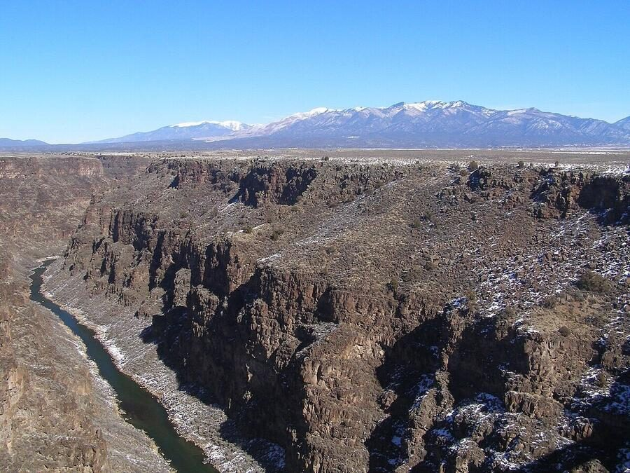
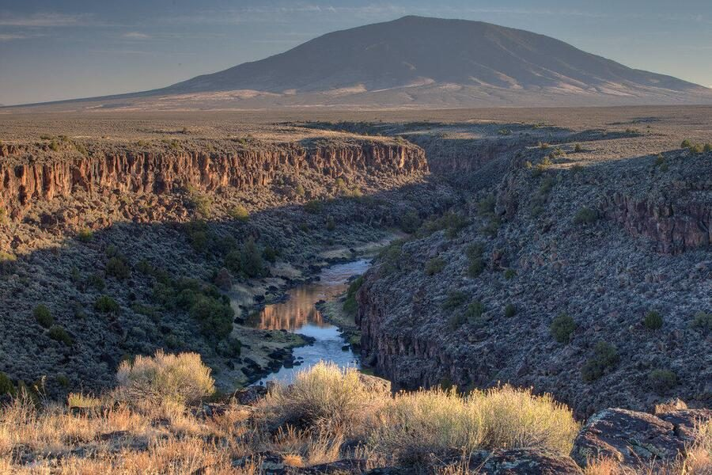
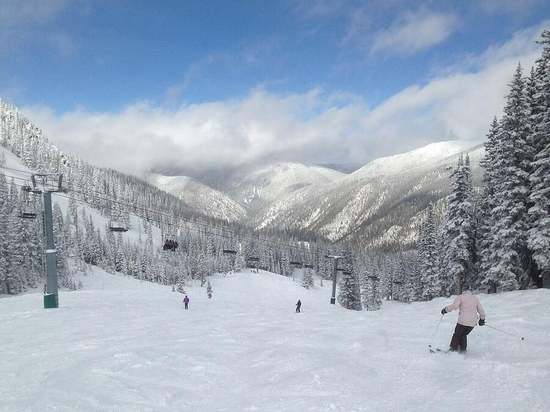
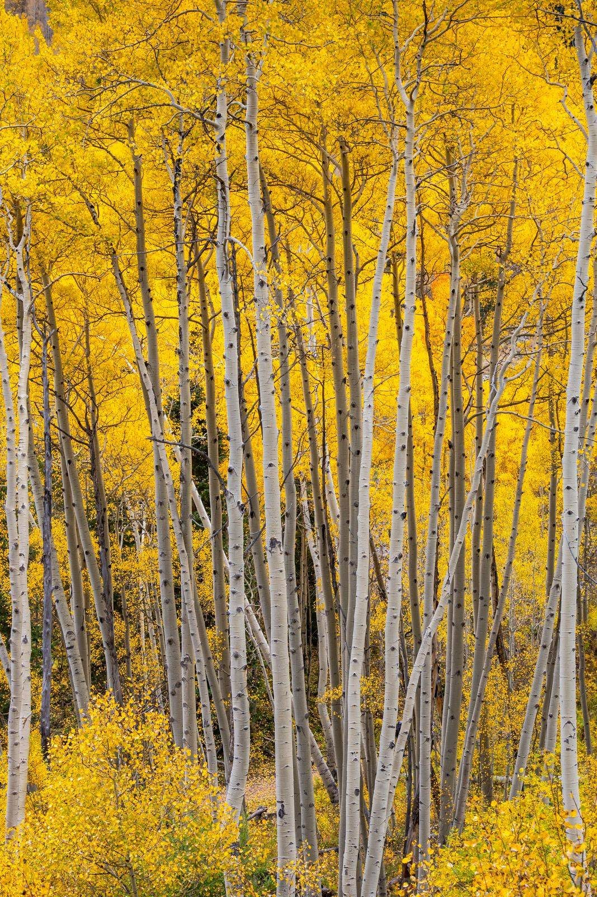

Medical psilocybin treatment in Taos, New Mexico
New Mexico's Medical Psilocybin Program is expected to begin in January 2027. Once certified, I plan to offer treatment in Taos for adults with a qualifying diagnosis, with a particular focus on the women I have long worked with.
A place suited to this work
Where you do this work matters. Psilocybin heightens your awareness of your surroundings, and the days after a medicine session are when insight settles in. Taos offers a setting that a city office cannot.
In nature
Taos sits at the foot of the Sangre de Cristo Mountains, between the Carson National Forest and the Rio Grande Gorge. Step outside after a session and you see mountains, open sky, and high desert. There are few better places to begin integration than a walk into that landscape. At night the sky is dark and full of stars, and Taos is seeking Dark Sky certification.
Slower and quieter
Taos is a small town. There is less noise, less traffic, and fewer demands on your attention, which leaves room to rest and reflect before and after your medicine day.
A long spiritual history
Taos Pueblo has been home to the Tiwa-speaking people for more than a thousand years. For the past century, artists, writers, and people looking for meaning have come here for the land and the light. Many people feel that history when they arrive.
A reason to stay longer
Many people extend their trip. Taos Ski Valley is about 35 minutes from town. In summer there is hiking, rafting on the Rio Grande, and hot springs. Time outdoors in the days after a session supports the work.
Photos: David Herrera; Bureau of Land Management; Paul Sableman. Licensed under CC BY 2.0.




New Mexico's program is medical and requires a diagnosis
Unlike Colorado, New Mexico limits psilocybin treatment to people with a qualifying condition. This applies to everyone, whether you live in New Mexico or travel from another state. Qualifying diagnoses are:
- Treatment-resistant depression
- Substance use disorder, including cannabis or nicotine use disorders
- Post-traumatic stress disorder (PTSD)
- End-of-life care
If you are not sure whether you qualify, we can talk it through in a free consultation. If you do not have a qualifying diagnosis, my Colorado practice may be the better fit.
What to expect in New Mexico
Evaluation appointment
New Mexico is expected to require a telehealth evaluation to confirm a qualifying diagnosis before treatment begins.
Telehealth
Preparation
Sessions to set intentions, review your history, and build the internal resources you will draw on during the medicine session.
Telehealth available
Medicine session in Taos
A full-day, in-person session in Taos. I am present throughout. The state may require a second staff member to be present as well.
In person · Taos, New Mexico
Integration
Sessions to process what came up and translate it into lasting change in your daily life.
Telehealth available
Involved in shaping the program
New Mexico is still finalizing its rules. I serve on the program's rulemaking subcommittees and do all I can to advocate for patient access and affordability. I will update this page as details are confirmed.
Last updated October 3, 2026.
My writing on New Mexico's proposed rules:
- Psilocybin program is being rushed in N.M. · Santa Fe New Mexican, October 2026
- Clinicians will actually deliver psilocybin care · Albuquerque Journal, September 2026
- Proposed psilocybin rules will hurt access in Taos County · The Taos News, September 2026
Cost and insurance
Pricing will be set once the state's rules are final. With the added evaluation appointment and possible second staff member, treatment in New Mexico may cost more than in Colorado.
I plan to provide superbills so you can seek out-of-network reimbursement from a commercial insurance plan. The intake evaluation, preparation, and integration sessions are medically necessary health care appointments and are coded that way. Coverage depends on your plan, and I cannot guarantee reimbursement.
Getting to Taos and where to stay
Taos Regional Airport has direct flights from Denver International Airport year-round. In the winter and summer seasons, there are also direct flights from Austin, Dallas, and Carlsbad, California.
Lodging is available in Taos for out-of-state participants and for New Mexico residents who would prefer to receive treatment in Taos rather than in their home communities, so you can stay through your preparation, medicine session, and the days after. You are welcome to stay elsewhere if you prefer.
Questions
See the FAQ for answers about the New Mexico program, who qualifies, Colorado sessions, safety screening, and cost.
Interested in treatment in Taos?
A free 15-minute consultation is a good first step. We can talk about whether you qualify, and what the process will look like.